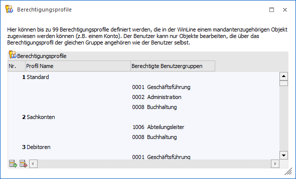
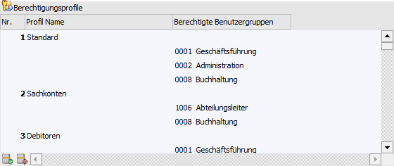
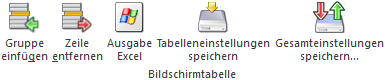
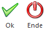
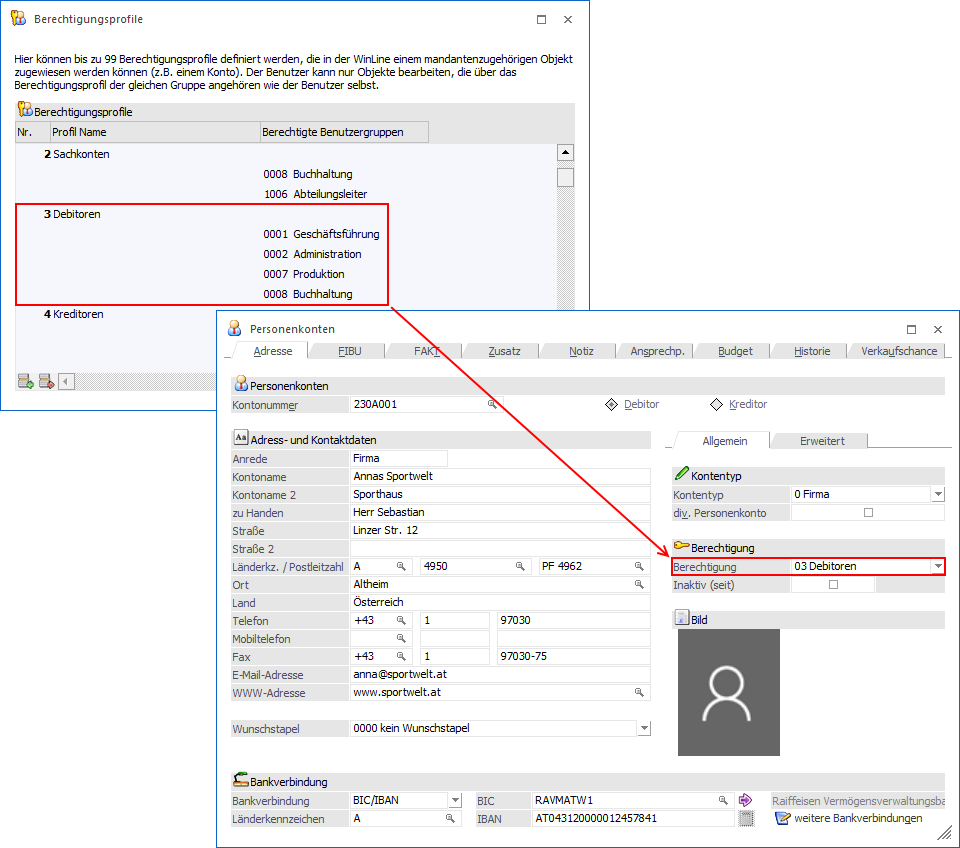
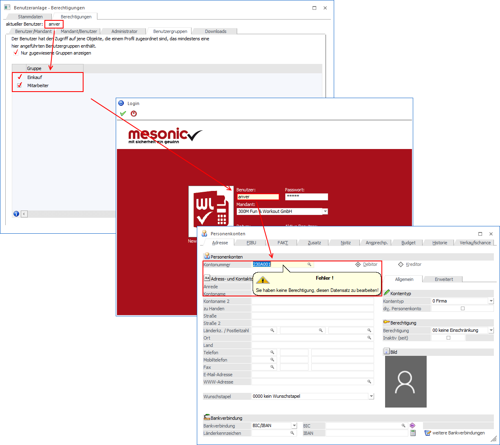

Im Menüpunkt…
1 Benutzer
1 Berechtigungsprofile
… können bis zu 99 Profile angelegt werden. Mit Berechtigungsprofilen kann gesteuert werden, wer (welcher Benutzer bzw. welche Benutzergruppe) auf welche Daten zugreifen darf.

Tabelle "Berechtigungsprofile"

In der Tabelle werden die Berechtigungsprofile definiert. Hierfür stehen folgende Eingabefelder zur Verfügung:
Ø Nr.
Die Nummer wird von der WinLine automatisch (fortlaufend) vergeben.
Ø Profil Name
Hier kann der Name des Berechtigungsprofils eingetragen werden. Dieser Name wird dann auch in weiterer Folge bei den jeweiligen Daten, wo das Berechtigungsprofil hinterlegt werden kann, angezeigt.
Ø Berechtigte Benutzergruppen
Aus der Auswahllistbox können die Benutzergruppen ausgewählt werden, die die Berechtigung haben, auf dieses Profil zuzugreifen. Dabei kann die Liste der Benutzergruppen beliebig lang werden. Die Benutzergruppen, welche mit 0 beginnen, sind die System-Benutzergruppen, die Benutzergruppen, welche mit 1 beginnen, sind die Berechtigungs-Benutzergruppen.
Hinweis
Neue Gruppen können durch Drücken der Einfügen-Taste oder des Button "Gruppe einfügen" hinzugefügt werden. Hierbei wird zuerst eine neue Zeile eingefügt, in welcher die Standardgruppe "0001 - Geschäftsführung" vorgeschlagen wird.
Tabellenbuttons

Ø Gruppe einfügen
Durch Anklicken des "Gruppe einfügen"-Buttons können zu einem bestehenden Berechtigungsprofil neue bzw. weitere Benutzergruppen hinzugefügt werden.
Ø Zeile entfernen
Durch Anwahl des Buttons "Zeile entfernen" wird das markierte Berechtigungsprofil oder die aktuell markierte Benutzergruppe gelöscht.
Ø Ausgabe Excel
Durch Anwahl des Buttons "Ausgabe Excel" wird der Inhalt der Tabelle an Microsoft Excel übergeben.
Ø Tabelleneinstellungen speichern
Die Spalten einer Tabelle können grundsätzlich an beliebige Positionen verschoben, bzw. in der Breite entsprechend angepasst werden. Durch Anwahl des Buttons "Tabelleneinstellungen speichern" werden die Einstellungen benutzerspezifisch gespeichert und bei dem nächsten Aufruf des Programmpunktes wieder vorgeschlagen.
Ø Gesamteinstellungen speichern
Im Gegensatz zu "Tabelleneinstellungen speichern" können mit "Gesamteinstellungen speichern" mehrere Tabellenaufbauten gespeichert und nach Wunsch geladen werden. Zusätzlich werden Sonderfunktionen der Tabelle (z.B. "Spalte gruppieren") ebenfalls bei der Speicherung bedacht.
Buttons

Ø Ok
Durch Anwahl des "Ok"-Buttons bzw. der Taste F5 werden alle vorgenommenen Änderung und Neuanlagen gespeichert.
Ø Ende
Durch Drücken des Buttons "Ende" oder der ESC-Taste wird das Fenster geschlossen. Eventuell vorgenommen Änderungen oder Neuanlagen werden nicht gespeichert.
Beispiel - Zusammenhang zwischen Benutzern, Benutzergruppen und Berechtigungsprofilen
Bei dem Personenkonto "230A001 - Annas Sportwelt" wird das Berechtigungsprofil "3 - Debitoren" hinterlegt.

In dem Berechtigungsprofil "3 - Debitoren" sind alle Benutzergruppen hinterlegt, die mit diesem Berechtigungsprofil arbeiten dürfen, d.h. hier:
ü 1 - Geschäftsführung
ü 2 - Administration
ü 7 - Produktion
ü 8 - Buchhaltung
Der Benutzer "anver", welcher den Benutzergruppen "Einkauf" und "Mitarbeiter" zugeordnet ist, hat in diesem Fall keinen Zugriff auf das Konto "230A001 - Annas Sportwelt".
